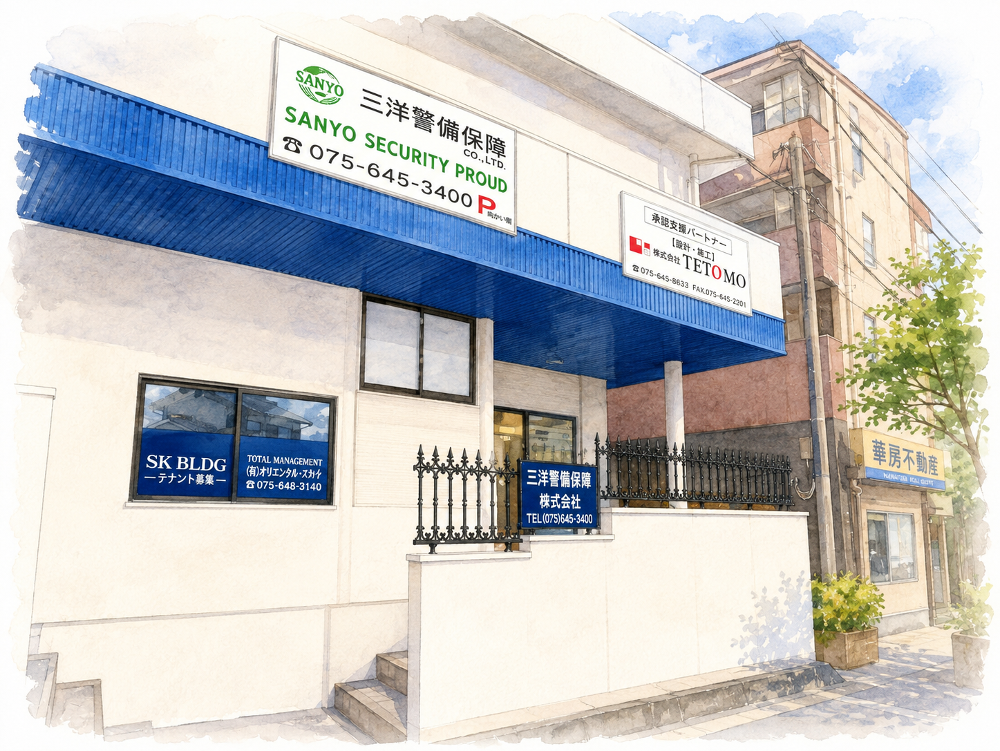

事業所案内
地域に根ざした警備会社として、京都の安心・安全を支えています。

警備本部事務所
当社の警備本部事務所のご案内です。いつでもお問い合わせいただける体制で、迅速な対応を行っています。
| 会社名 | 三洋警備保障株式会社 |
|---|---|
| 所在地 |
〒612-8401 京都市伏見区深草下川原町55番地 |
| 電話番号 | 075-645-3400 |
| FAX | 075-645-5900 |
| 営業内容 | 施設警備・交通誘導警備・雑踏警備・イベント警備 |
| 営業時間 | 24時間受付・年中無休 |
警備本部事務所所在地
当ページで表示しているGoogle MAPは、警備本部事務所所在地である深草下川原町55番地の位置を示しています。
〒612-8401
京都市伏見区深草下川原町55番地
交通アクセス
● 京都市営地下鉄烏丸線「くいな橋駅」より徒歩約8分
● 近鉄京都線「竹田駅」より徒歩約17分
● 名神高速道路 京都南ICより車で約8分
● お車でお越しの際は事前にご連絡ください。
本社事務所
〒612-8401
京都市伏見区竹田久保町9-1
ご来社について
ご相談・お見積り・採用面接などでご来社の際は、事前にお電話いただけますとスムーズにご案内できます。